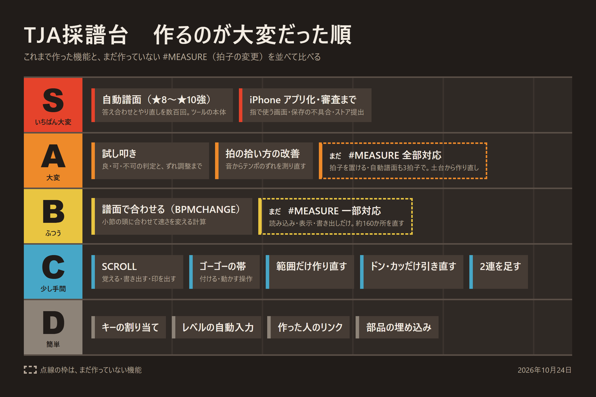

TJA採譜台：拍子の変更（#MEASURE）がなかなか作れない理由
こんにちは、maosun です。
TJA採譜台を使ってくれているみなさん、いつもありがとうございます。動画のコメントなどで、たくさんの意見をいただいています。
その中でとくに多いのが「拍子の変更に対応してほしい」という声です。3拍子の曲や、途中で拍子が変わる曲を読み込むと、ずれてしまうんですよね。
この記事では、なぜ拍子の変更がすぐには作れないのかを、これまで作った機能と比べながら書いてみます。
ツールはこちら：https://maosun-dev.com/tjasaifu/
このツールは「太鼓の達人」シリーズの非公式なファンメイドコンテンツです。公式とは関係ありません。
#MEASURE ってなに？
TJA ファイルでは、`#MEASURE 3/4` のように書くと、そこから拍子が変わります。ふつうは4拍で1小節ですが、3/4 なら3拍で1小節、6/8 なら8分音符6つで1小節になります。
今の TJA採譜台は、#MEASURE が入った譜面を読み込むと警告を出し、書き出しにはそのまま残します。なので、太鼓さん次郎で遊ぶぶんには壊れません。
ただ、ツールの画面では全部4拍子として並べてしまうので、拍子が変わったところから小節線と音符がずれて見えてしまいます。
なぜ大変なの？
TJA採譜台は、最初から「曲を入れるだけで、気軽に譜面が作れる」ことを一番に考えて作ってきました。例に使っている星屑ランナーのように、最近は AI で作った曲で譜面を作る人も多いです。そういう曲のほとんどは4拍子なので、まずは4拍子にしぼって、自動で作る譜面の出来をよくすることを優先しました。
その代わり、小節線を引くのも、小節の番号を出すのも、ゴーゴータイムも、書き出しも、自動で譜面を作るところも、ぜんぶ「1小節は4拍」という決まりの上に乗っています。
数えてみたら、この決まりに頼っている場所が約160か所ありました。
この前追加した BPM変化や SCROLL は、「時間の流れ」を変えるだけだったので、小節の形はそのままで作れました。でも拍子の変更は「小節の長さ」そのものが変わります。家でいうと、柱を立て直すような作業なんです。
これまで作った機能と比べてみた
これまで作った機能を、作るのが大変だった順に並べてみました。点線の枠が、まだ作っていない拍子の変更です。


拍子の変更は、どこまでやるかで大変さが変わります。
- 一部だけ（B）：読み込んだ譜面をずれずに表示して、手で直して、正しく書き出せるようにする。自動で作る譜面は4拍子のまま
- 全部（A）：ツールの中で拍子を置けるようにして、自動で作る譜面も3拍子や6/8で作れるようにする
全部やると、試し叩きと同じくらいの大きな作業になります。自動で作る譜面は、★の難しさに合うように数百回も答え合わせとやり直しをして調整してきたので、3拍子用にまた調整が必要になります。
これからのこと
いただいた声が多いので、拍子の変更はちゃんと考えていきます！作るとしたら、まずは「一部だけ」から始めるのがよさそうだと思っています。
時間はかかりそうですが、気長に待ってもらえるとうれしいです。ほかにも「こうなったらいいな」があれば、動画のコメントなどで教えてください！